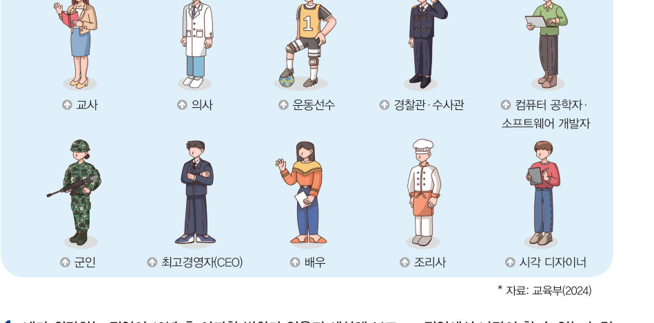
주문을 받던 사람 → 무인 단말기 → 서빙 로봇. 디지털 기술은 직업을 어떻게 바꾸고 있을까? 섞인 그림을 단계별로 맞춰 보고, 내 희망 직업이 10년 뒤 어떻게 변할지, 그때 나만이 할 수 있는 능력은 무엇일지 탐색해 보자.
디지털 사회는 네트워크를 통해 소통하며 인공지능 기술과 다양한 디지털 서비스를 이용해 편리한 생활을 할 수 있다. 디지털 사회로의 전환에 따라 업무 환경과 업무를 수행하는 데 필요한 능력에도 변화가 생기고 있다.
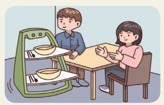
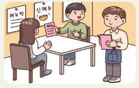
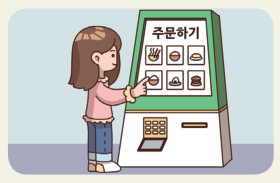
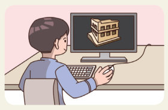
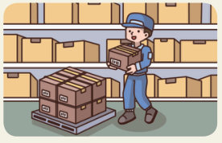
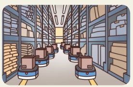
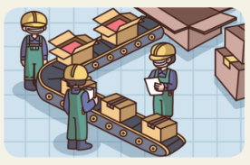
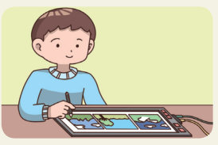
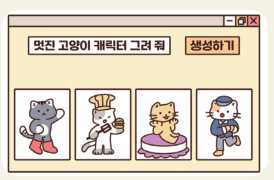
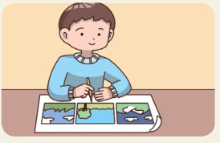
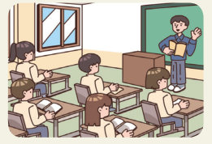
디지털 사회에서는 반복적이고 간단한 작업의 자동화뿐만 아니라 전문성을 필요로 하는 업무도 지능화되고 있어 지식, 기술과 함께 창의성과 아이디어가 더욱 중요해지고 있다. 또한, 정보의 공유와 소통을 통한 협력적인 업무 처리와 인공지능을 포함한 디지털 기술과의 협업도 강조되고 있다.
디지털 기술의 발달로 직업에도 많은 변화가 생기고 있다. 예술과 문학 분야에서는 인공지능이 그림이나 소설, 시, 음악 등을 자동으로 생성하고, 방송과 연예 분야에서는 가상 인간이 등장하여 주목받으면서 이를 개발하고 운영하는 새로운 직업도 생겨났다. 그 밖에도 디지털 기술은 요식업, 건설업, 물류업, 만화 출판업, 교육 서비스업과 같은 직업 분야 전반에 변화를 가져왔고, 이에 디지털 기술의 활용 능력은 점차 중요해지고 있다.
| 예술과 문학 분야에서는 인공지능이 그림, 소설, 시, 음악 등을 자동으로 생성한다. | |
| 가상 인간이 등장하면서 이를 개발하고 운영하는 새로운 직업이 생겨났다. | |
| 디지털 기술은 첨단 산업에만 변화를 가져오므로 다른 직업에는 디지털 기술 활용 능력이 필요 없다. |
| 평가 기준 | 스스로 평가 |
|---|---|
| 디지털 사회 변화에 따른 직업의 특성을 설명할 수 있는가? | |
| 사회 변화에 따른 직업의 변화를 이해하고 나의 진로를 탐색할 수 있는가? |